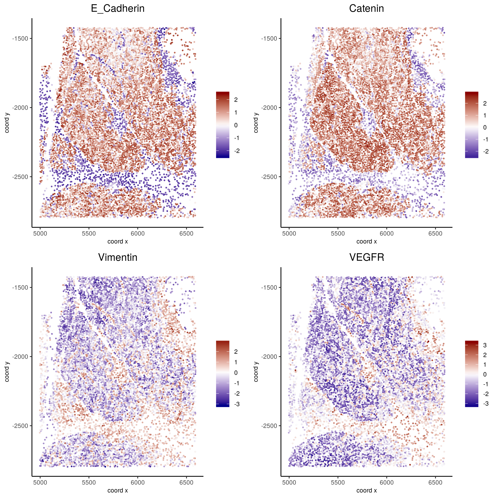

CyCIF dataset
We will re-analyze the PDAC data generated by tissue-CyCIF as explained in the paper by Lin et al.
Create Giotto object and process data
library(Giotto)
## create instructions
## instructions allow us to automatically save all plots into a chosen results folder
my_python_path = "/your/python/path/python"
results_folder = '/your/results/path/'
instrs = createGiottoInstructions(python_path = my_python_path)
Pdac_data = fread('/path/to/rawdata_Figure7&8_PDAC.csv')
Pdac_data[, cell_ID := paste0('cell_', 1:nrow(Pdac_data))]
# locations
pdac_locations = Pdac_data_filter[,.(Xt, -Yt)]
# expression
pdac_expression = as.matrix(Pdac_data[,c(9:15,18:31)]); rownames(pdac_expression) = Pdac_data$cell_ID
# metadata
pdac_metadat = Pdac_data[,c(1:8,16:17,32:39)]
# Create Giotto Object
pdac_test <- createGiottoObject(raw_exprs = t(pdac_expression), spatial_locs = pdac_locations, instructions = instrs, cell_metadata = pdac_metadat)
## normalize & adjust
pdac_test <- normalizeGiotto(gobject = pdac_test, scalefactor = 10000, verbose = T)
pdac_test <- addStatistics(gobject = pdac_test)
Visualize original annotations
## visualize original annotations ##
spatPlot(gobject = pdac_test, point_size = 0.5, coord_fix_ratio = 1, cell_color = 'frame', background_color = 'black', legend_symbol_size = 3)
spatPlot(gobject = pdac_test, point_size = 0.3, coord_fix_ratio = 1, cell_color = 'COL', background_color = 'black', legend_symbol_size = 3)
spatPlot(gobject = pdac_test, point_size = 0.3, coord_fix_ratio = 1, cell_color = 'ROW', background_color = 'black', legend_symbol_size = 3)
First spatPlot
Second spatPlot
Third spatPlot
## add external histology information
pdac_metadata = pDataDT(pdac_test)
pancreas_frames = c(1:6, 27:31, 15:19, 40:44)
PDAC_frames = c(23:26, 35:37, 51:52, 64:65, 77)
small_intestines_frames = c(49:50, 63, 75:76, 88:89, 100:103, 112:116, 125:129, 137:140)
# detailed histology
hist_info = ifelse(pdac_metadata$frame %in% pancreas_frames, 'pancr', ifelse(pdac_metadata$frame %in% PDAC_frames, 'PDAC', ifelse(pdac_metadata$frame %in% small_intestines_frames, 'small_intest', 'other')))
pdac_test = addCellMetadata(pdac_test, new_metadata = hist_info)
spatPlot(gobject = pdac_test, point_size = 0.3, coord_fix_ratio = 1, cell_color = 'hist_info', background_color = 'black', legend_symbol_size = 3)
# coarse histology
hist_info2 = ifelse(pdac_metadata$frame %in% pancreas_frames, 'pancr', ifelse(pdac_metadata$frame %in% small_intestines_frames, 'small_intest','PDAC'))
pdac_test = addCellMetadata(pdac_test, new_metadata = hist_info2)
spatPlot(gobject = pdac_test, point_size = 0.3, coord_fix_ratio = 1, cell_color = 'hist_info2', background_color = 'black', legend_symbol_size = 3, point_border_stroke = 0.001)
Detailed histology spatPlot
Coarse histology spatPlot
Clustering
# PCA
pdac_test <- runPCA(gobject = pdac_test, expression_values = 'normalized', scale_unit = T)
signPCA(pdac_test, scale_unit = T, scree_ylim = c(0, 3), save_param = list(save_name = '2_screeplot'))
plotPCA(gobject = pdac_test, point_shape = 'no_border', point_size = 0.2, save_param = list(save_name = '2_PCAplot'))
# UMAP
pdac_test <- runUMAP(pdac_test, dimensions_to_use = 1:14, n_components = 2, n_threads = 12)
plotUMAP(gobject = pdac_test, point_shape = 'no_border', point_size = 0.2, save_param = list(save_name = '2_UMAP'))
## sNN network (default)
pdac_test <- createNearestNetwork(gobject = pdac_test, dimensions_to_use = 1:14, k = 20)
## 0.2 resolution
pdac_test <- doLeidenCluster(gobject = pdac_test, resolution = 0.2, n_iterations = 100, name = 'leiden')
# create customized color palette for leiden clustering results
pdac_metadata = pDataDT(pdac_test)
leiden_colors = Giotto:::getDistinctColors(length(unique(pdac_metadata$leiden)))
names(leiden_colors) = unique(pdac_metadata$leiden)
color_3 = leiden_colors['3'];color_10 = leiden_colors['10']
leiden_colors['3'] = color_10; leiden_colors['10'] = color_3
plotUMAP(gobject = pdac_test, cell_color = 'leiden', point_shape = 'no_border', point_size = 0.2, cell_color_code = leiden_colors)
plotUMAP(gobject = pdac_test, cell_color = 'hist_info',point_shape = 'no_border', point_size = 0.2)
spatPlot(gobject = pdac_test, cell_color = 'leiden', point_shape = 'no_border', point_size = 0.2,
cell_color_code = leiden_colors, coord_fix_ratio = 1)
PCA plot
screeplot
UMAP
UMAP histology
Spatplot Leiden clustering
Visualize spatial and expression space
spatDimPlot2D(gobject = pdac_test, cell_color = 'leiden', spat_point_shape = 'no_border', spat_point_size = 0.2, dim_point_shape = 'no_border', dim_point_size = 0.2, cell_color_code = leiden_colors)
spatDimPlot2D(gobject = pdac_test, cell_color = 'leiden', spat_point_shape = 'border', spat_point_size = 0.2, spat_point_border_stroke = 0.01, dim_point_shape = 'border', dim_point_size = 0.2, dim_point_border_stroke = 0.01, cell_color_code = leiden_colors)
spatDimPlot2D(gobject = pdac_test, cell_color = 'hist_info2', spat_point_shape = 'border', spat_point_size = 0.2, spat_point_border_stroke = 0.01, dim_point_shape = 'border', dim_point_size = 0.2, dim_point_border_stroke = 0.01)
First spatPlot
Second spatPlot

Third spatPlot
Cell type marker gene detection
# resolution 0.2
cluster_column = 'leiden'
# gini
markers_gini = findMarkers_one_vs_all(gobject=pdac_test, method="gini", expression_values="scaled",
cluster_column=cluster_column, min_genes=5)
markergenes_gini = unique(markers_gini[, head(.SD, 5), by="cluster"][["genes"]])
plotMetaDataHeatmap(pdac_test, expression_values = "norm", metadata_cols = c(cluster_column), selected_genes = markergenes_gini,
custom_cluster_order = c(1, 10, 3, 12, 8, 2, 9, 6, 11, 13, 4, 5, 7),
save_param = list(save_name = '5_heatmap_gini_custom_order'), y_text_size = 8, show_values = 'zscores_rescaled')
topgenes_gini = markers_gini[, head(.SD, 1), by = 'cluster']$genes
violinPlot(pdac_test, genes = unique(topgenes_gini), cluster_column = cluster_column,
strip_text = 8, strip_position = 'right',
save_param = c(save_name = '5_violinplot_gini', base_width = 5, base_height = 10))
## all genes heatmap
plotMetaDataHeatmap(pdac_test, expression_values = "norm", metadata_cols = 'leiden',
custom_cluster_order = c(1, 10, 3, 12, 8, 2, 9, 6, 11, 13, 4, 5, 7),
y_text_size = 8, show_values = 'zscores_rescaled')
plotMetaDataHeatmap(pdac_test, expression_values = "norm", metadata_cols = c('leiden','hist_info2'),
first_meta_col = 'leiden', second_meta_col = 'hist_info2',
y_text_size = 8, show_values = 'zscores_rescaled')
ViolinPlot
Heatmap all genes custom order
Heatmap facet

Spatial subsets
spatPlot(pdac_test, cell_color = 'leiden', cell_color_code = leiden_colors,
point_shape = 'no_border', point_size = 0.75, group_by = 'hist_info2')
spatPlot(pdac_test, cell_color = 'leiden', cell_color_code = leiden_colors, point_shape = 'no_border', point_size = 0.3,
group_by = 'hist_info2', group_by_subset = c('pancr'), cow_n_col = 1)
spatPlot(pdac_test, cell_color = 'leiden', cell_color_code = leiden_colors, point_shape = 'no_border', point_size = 0.3,
group_by = 'hist_info2', group_by_subset = c('PDAC'), cow_n_col = 1)
spatPlot(pdac_test, cell_color = 'leiden', cell_color_code = leiden_colors, point_shape = 'no_border', point_size = 0.3,
group_by = 'hist_info2', group_by_subset = c('small_intest'), cow_n_col = 1)
Subset histologies
Subset pancreas
Subset PDAC
Subset small intestine

Spatial distribution of clusters
# spatial enrichment of groups
for(group in unique(pDataDT(pdac_test)$leiden)) {
spatPlot(pdac_test, cell_color = 'leiden', point_shape = 'no_border', point_size = 0.3, other_point_size = 0.1,
select_cell_groups = group, cell_color_code = 'red')
}
Annotate clusters
cell_metadata = pDataDT(pdac_test)
cluster_data = cell_metadata[, .N, by = c('leiden', 'hist_info2')]
cluster_data[, fraction:= round(N/sum(N), 2), by = c('leiden')]
setorder(cluster_data, leiden, hist_info2, fraction)
# final annotation
names = 1:13
location = c('pancr', 'intest', 'general', 'intest', 'pancr',
'intest', 'pancr', 'canc', 'general', 'pancr',
'general', 'pancr', 'intest')
feats = c('epithelial_I', 'fibroblast_VEGFR+', 'stroma_HER2+_pERK+', 'epithelial_lining_p21+', 'epithelial_keratin',
'epithelial_prolif', 'epithelial_actin++', 'immune_PD-L1+', 'stromal_actin-', 'epithelial_tx_active',
'epithelial_MET+_EGFR+', 'immune_CD45+', 'epithelial_pAKT')
annot_dt = data.table('names' = names, 'location' = location, 'feats' = feats)
annot_dt[, annotname := paste0(location,'_',feats)]
cell_annot = annot_dt$annotname;names(cell_annot) = annot_dt$names
pdac_test = annotateGiotto(pdac_test, annotation_vector = cell_annot, cluster_column = 'leiden')
# specify colors
leiden_colors
leiden_names = annot_dt$annotname; names(leiden_names) = annot_dt$names
cell_annot_colors = leiden_colors
names(cell_annot_colors) = leiden_names[names(leiden_colors)]
# covisual
spatDimPlot(gobject = pdac_test, cell_color = 'cell_types', cell_color_code = cell_annot_colors,
spat_point_shape = 'border', spat_point_size = 0.2, spat_point_border_stroke = 0.01,
dim_point_shape = 'border', dim_point_size = 0.2, dim_point_border_stroke = 0.01,
dim_show_center_label = F, spat_show_legend = T, dim_show_legend = T, legend_symbol_size = 3)
# spatial only
spatPlot(gobject = pdac_test, cell_color = 'cell_types', point_shape = 'no_border', point_size = 0.2,
coord_fix_ratio = 1, show_legend = T, cell_color_code = cell_annot_colors, background_color = 'black')
# dimension only
plotUMAP(gobject = pdac_test, cell_color = 'cell_types', point_shape = 'no_border', point_size = 0.2,
show_legend = T, cell_color_code = cell_annot_colors, show_center_label = F, background_color = 'black')
Analyses for the paper
cell_type_order_pdac = c("pancr_epithelial_actin++", "pancr_epithelial_I", "intest_epithelial_lining_p21+", "pancr_epithelial_keratin",
"intest_epithelial_prolif" ,"general_epithelial_MET+_EGFR+", "intest_epithelial_pAKT", "pancr_epithelial_tx_active",
"canc_immune_PD-L1+","general_stromal_actin-", "pancr_immune_CD45+", "intest_fibroblast_VEGFR+",
"general_stroma_HER2+_pERK+")
plotMetaDataHeatmap(pdac_test, expression_values = "scaled", metadata_cols = c('cell_types'),
custom_cluster_order = cell_type_order_pdac,
y_text_size = 8, show_values = 'zscores_rescaled')
## pancreas region ##
my_pancreas_Ids = pdac_metadata[frame == 17][['cell_ID']]
my_pancreas_giotto = subsetGiotto(pdac_test, cell_ids = my_pancreas_Ids)
spatPlot(my_pancreas_giotto, cell_color = 'leiden', point_shape = 'no_border', point_size = 1, cell_color_code = leiden_colors)
spatGenePlot(my_pancreas_giotto, expression_values = 'scaled', point_border_stroke = 0.01,
genes = c('E_Cadherin','Catenin', 'Vimentin', 'VEGFR'), point_size = 1)
plotUMAP(my_pancreas_giotto, cell_color = 'leiden', point_shape = 'no_border', point_size = 0.5,
cell_color_code = leiden_colors, show_center_label = F)
dimGenePlot(my_pancreas_giotto, expression_values = 'scaled', point_border_stroke = 0.01,
genes = c('E_Cadherin','Catenin', 'Vimentin', 'VEGFR'), point_size = 1)


## intestine region ##
my_intest_Ids = pdac_metadata[frame == 115][['cell_ID']]
my_intest_giotto = subsetGiotto(pdac_test, cell_ids = my_intest_Ids)
spatPlot(my_intest_giotto, cell_color = 'leiden', point_shape = 'no_border', point_size = 1, cell_color_code = leiden_colors)
spatGenePlot(my_intest_giotto, expression_values = 'scaled', point_border_stroke = 0.01,
genes = c('PCNA','Catenin', 'Ki67', 'pERK'), point_size = 1)
plotUMAP(my_intest_giotto, cell_color = 'leiden', point_shape = 'no_border', point_size = 0.5,
cell_color_code = leiden_colors, show_center_label = F)
dimGenePlot(my_intest_giotto, expression_values = 'scaled', point_border_stroke = 0.01,
genes = c('PCNA','Catenin', 'Ki67', 'pERK'), point_size = 1)